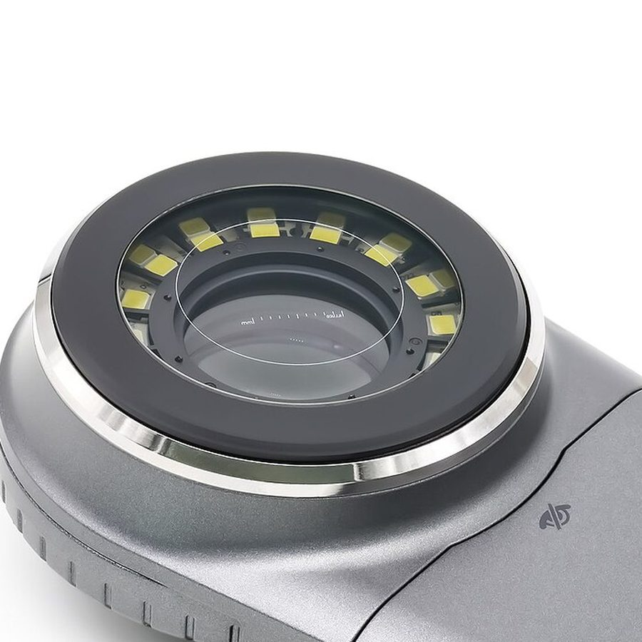

Seven lesion types
From harmless moles and keratoses to melanoma and basal cell carcinoma.
Research demo · trained on 10,015 dermoscopy images
Upload a dermoscopy image. An ensemble of neural networks returns calibrated probabilities for seven lesion types, and a heatmap of what it looked at.
01Why it exists
New and changing spots are among the most common reasons people see a dermatologist, and the wait can feel long. SkinDetect shows how a neural network reads a dermoscopy image: fast, open about its uncertainty, and clear that it is a teaching tool, not a diagnosis.
Try the analyserFrom harmless moles and keratoses to melanoma and basal cell carcinoma.
Probabilities are tuned so that 70% is right about 70% of the time.
A Grad-CAM heatmap shows which regions drove each prediction.
Images are analysed in memory and never stored or logged.
02The analyser
Images taken through a dermatoscope work best: close-up, evenly lit, lesion centred. Results take a few seconds.
Or try an example
Result
Your analysis appears here: the most likely lesion type, every class's probability, a malignancy score and a heatmap.
Running the ensemble over several views…
Most likely
– probability · –
Not a diagnosis. This research model can be confidently wrong. Anyone worried about a skin lesion should see a dermatologist.
03Seven lesion types
The big number is the share of each type the model recognised in cross-validation.
04How it works


05Results
Cross-validation on HAM10000, split by lesion so the same mole never appears in both training and validation.
Balanced accuracy
–
Recall averaged over all seven classes; the ISIC 2018 ranking metric
Macro AUC
–
How well each class is ranked above the rest (1.0 is perfect)
Malignant caught
–
Malignant lesions predicted as any malignant type
Benign cleared
–
Benign lesions correctly left unflagged
Share of each type the model identified correctly
Rows: true type · columns: predicted · share of each row
Calibration error: the average gap between stated confidence and actual accuracy. One network alone is over-confident; averaging five fixes most of it.
06Limits

07Quick answers
No. It's a research and teaching tool, not a medical device. It was trained on dermatoscope images, so a phone photo is outside what it has seen, and even on the right kind of image it makes mistakes. A dermatologist can examine the whole lesion, its history and your risk factors.
HAM10000: 10,015 dermoscopy images of pigmented lesions collected over 20 years in Vienna and Queensland, published by Tschandl, Rosendahl and Kittler (2018). More than half of the diagnoses are confirmed by histopathology.
It's the combined probability of the three malignant classes: melanoma, basal cell carcinoma and actinic keratosis / intraepithelial carcinoma. The probabilities are calibrated, so across many images a score of 30% should be right about 30% of the time.
An ensemble of ImageNet-pretrained EfficientNet networks fine-tuned with a class-weighted loss. Each one held out a different fifth of the data, and their predictions are averaged over rotated and mirrored views of the image.
No. The image is processed in memory to produce the result and is not saved or logged.
Some melanomas and benign nevi look very similar, even to experts. The data is also imbalanced: two-thirds of the images are nevi. Class weighting helps, but this remains the hardest distinction, which is why the result is a probability rather than a verdict.
Ready when you are